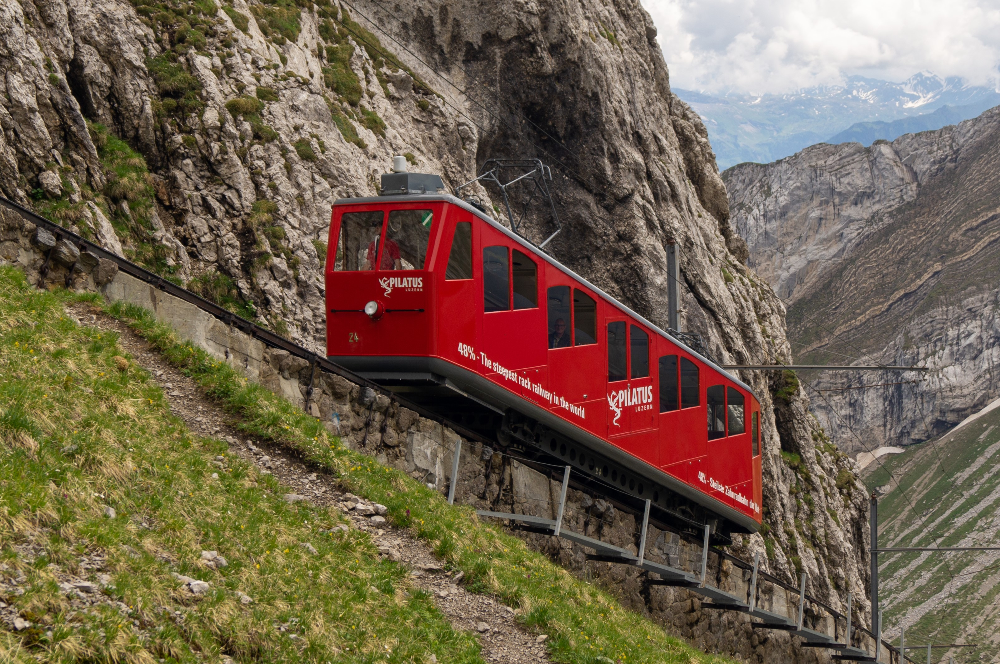
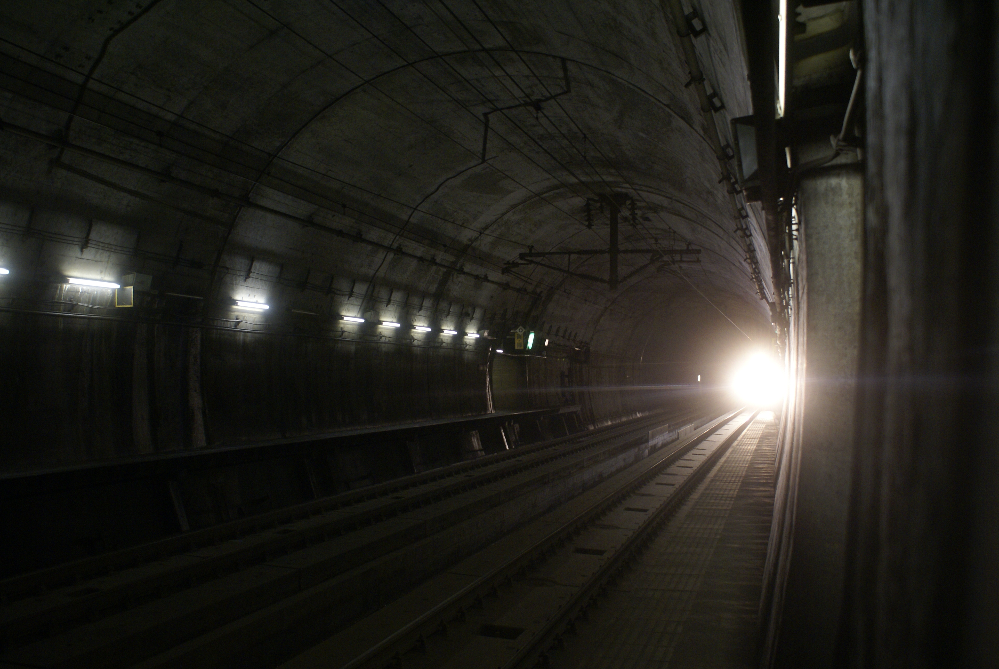

Блог
научете интересни факти, свързани с влакове
Най-дългата
Ж.П. линия в света

Транссибирската железопътна линия е най-дългата в света, с дължина от 9289 километра, свързваща Москва с Владивосток. Тя преминава през осем часови зони и различни природни ландшафти като Уралските планини и сибирските гори. Пътуването по линията отнема около седем дни, превръщайки го в уникално приключение за любителите на дългите пътешествия и красиви гледки.
Влакът с най-стръмен наклон:
ЖП линията Пилатус ,Швейцария
ЖП линията Пилатус в Швейцария държи рекорда за най-стръмната зъбчата железница в света. Тя има максимален наклон от 48%, което означава, че се изкачва почти половин метър вертикално за всеки метър хоризонтално! Линията свързва Алпнахщад с върха на планината Пилатус, предлагайки спиращи дъха гледки към Швейцарските Алпи и езерото Люцерн.
Влаковете стрела в Япония
Шампиони по точност

Японските влакове Шинкансен, известни още като влакове стрела, са прочути не само с високите си скорости (до 320 км/ч), но и с точността си. Средното закъснение на Шинкансен е по-малко от една минута годишно. В случай на закъснение, персоналът на влаковете дори издава удостоверения за извинение на пътниците, за да могат да ги покажат на работодатели или училища като причина за закъснението!
Най-дългият
подводен железопътен тунел
Тунелът Сейкан в Япония е най-дългият подводен железопътен тунел в света, с обща дължина от 53,85 километра, от които 23,3 километра са под морското дъно. Тунелът свързва японските острови Хоншу и Хокайдо под протока Цугару. Завършен през 1988 година, той е създаден като устойчиво решение за транспорт в регион, известен със силните си земетресения и тежки зимни условия.
e-mail: iliyangeorgiev28@itpg-varna.bg